2013–2016 · InBody 재직
인바디 재직 기간(2013–2016) 동안 담당한
홈페이지 UX/UI 디자인과 인바디 밴드 앱 디자인입니다.
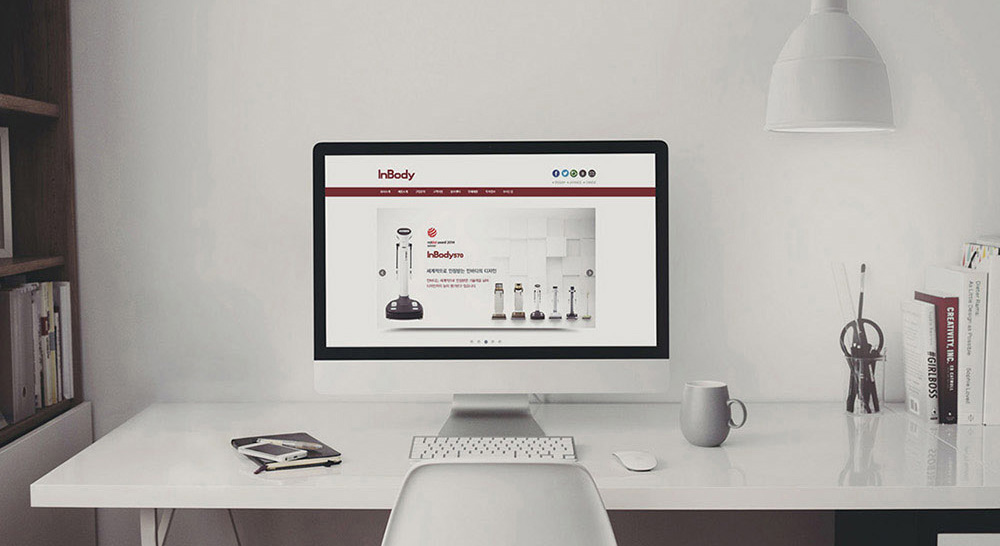
체성분 분석 전문 브랜드 InBody의 홈페이지 UX/UI 디자인. 체성분 측정 결과(체중·근육량·체지방률·내장지방 등)를 수치 나열이 아닌 시각적 그래프와 개인화 인사이트로 표현해 사용자가 자신의 건강 상태를 직관적으로 이해할 수 있도록 설계했습니다.
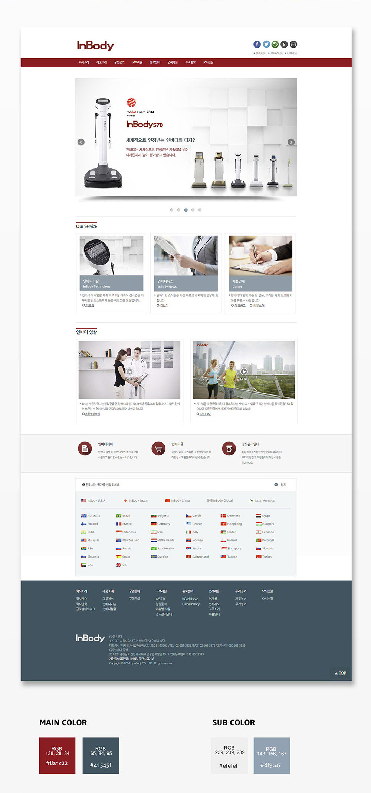
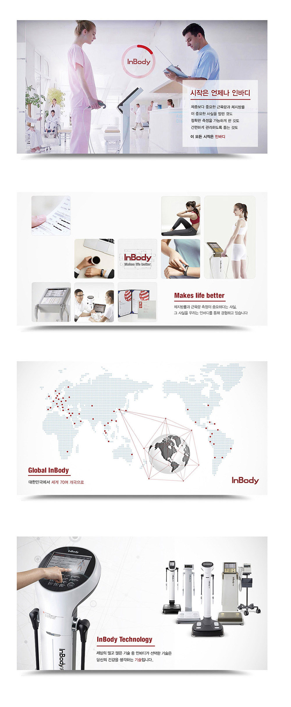
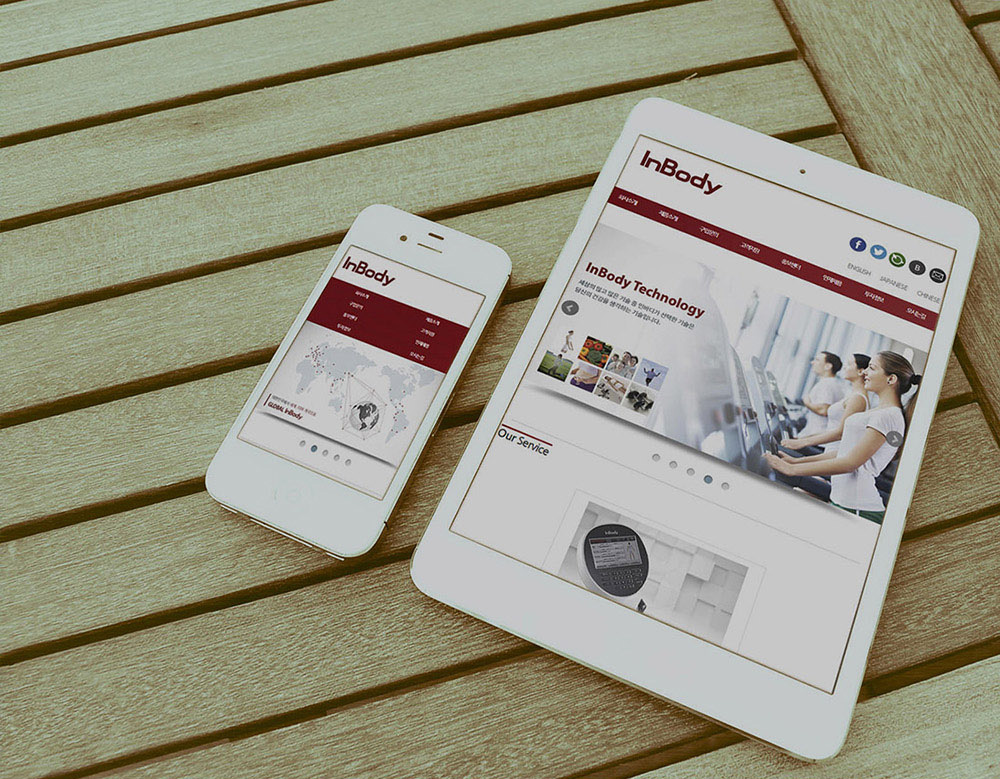
측정 결과 상세 리포트, 기간별 변화 추이, 목표 설정 화면을 설계했습니다. 전문 용어를 알기 쉽게 풀어쓰고, 개선이 필요한 수치는 시각적으로 강조해 사용자가 스스로 건강을 관리할 수 있도록 동기를 부여합니다.
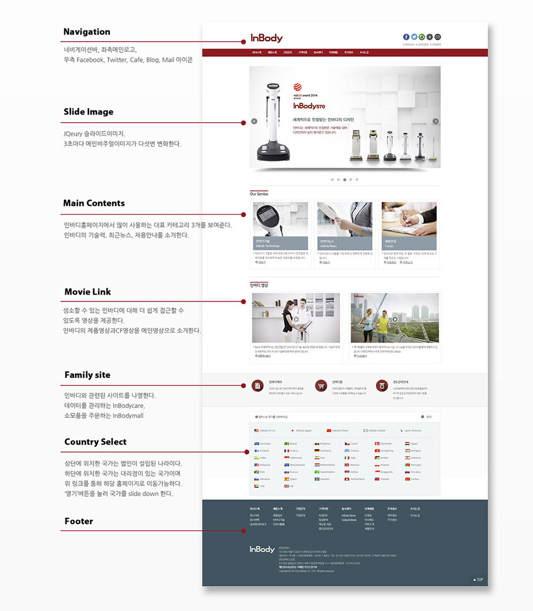
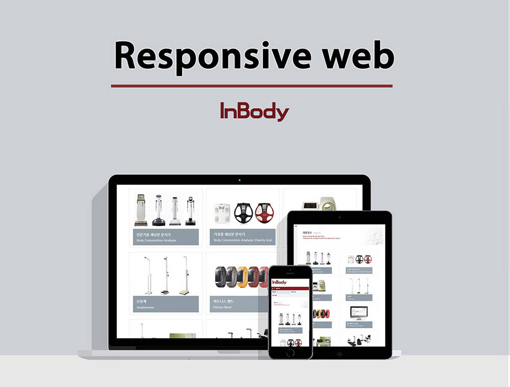
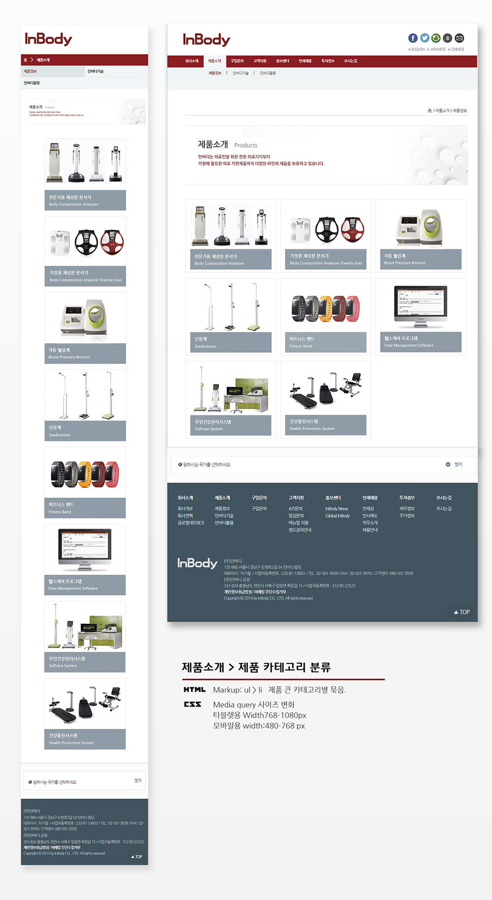
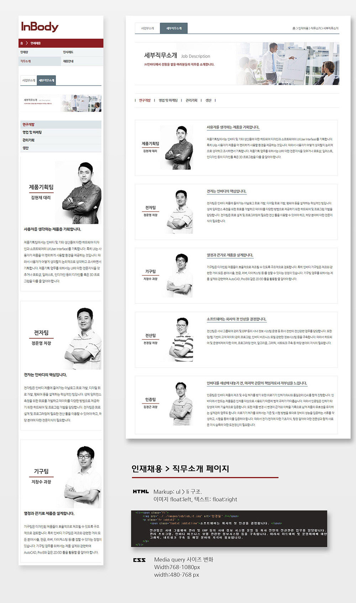
홈페이지와 연동되는 InBody 밴드 앱의 UX/UI를 설계했습니다. 측정 기기와 블루투스로 연결해 결과를 즉시 확인하고, 운동·식단 데이터와 통합해 종합적인 건강 관리가 가능한 앱 경험을 구현했습니다.
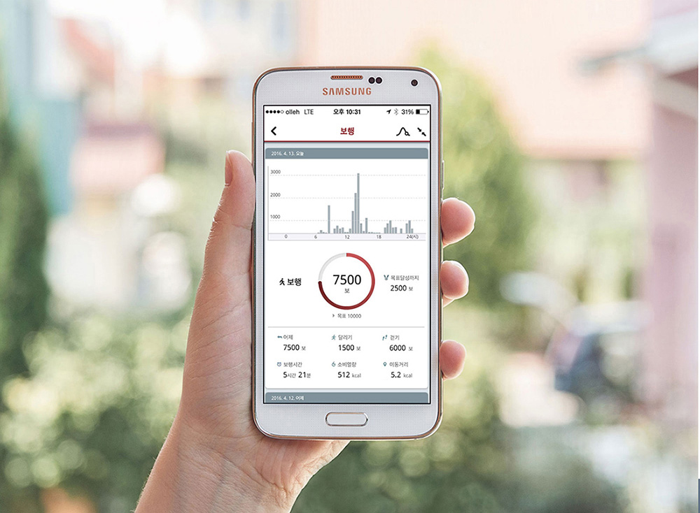
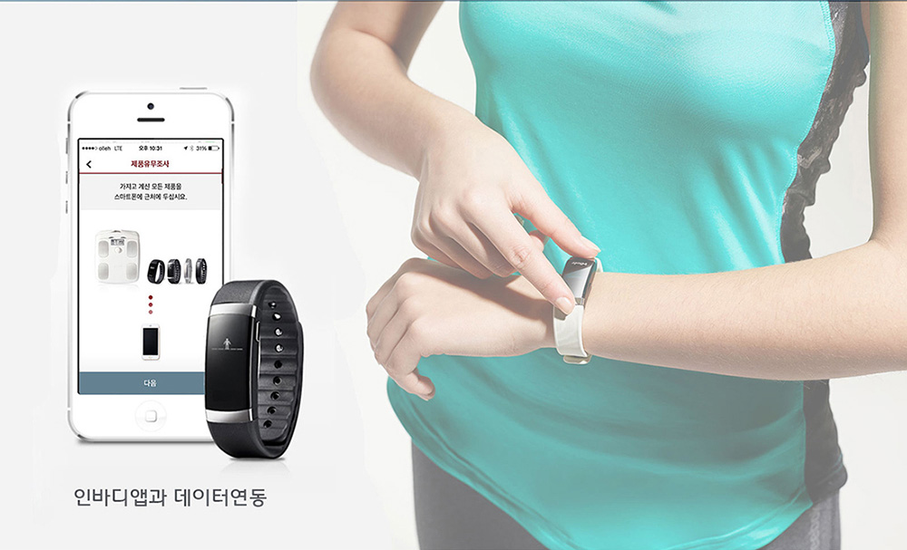
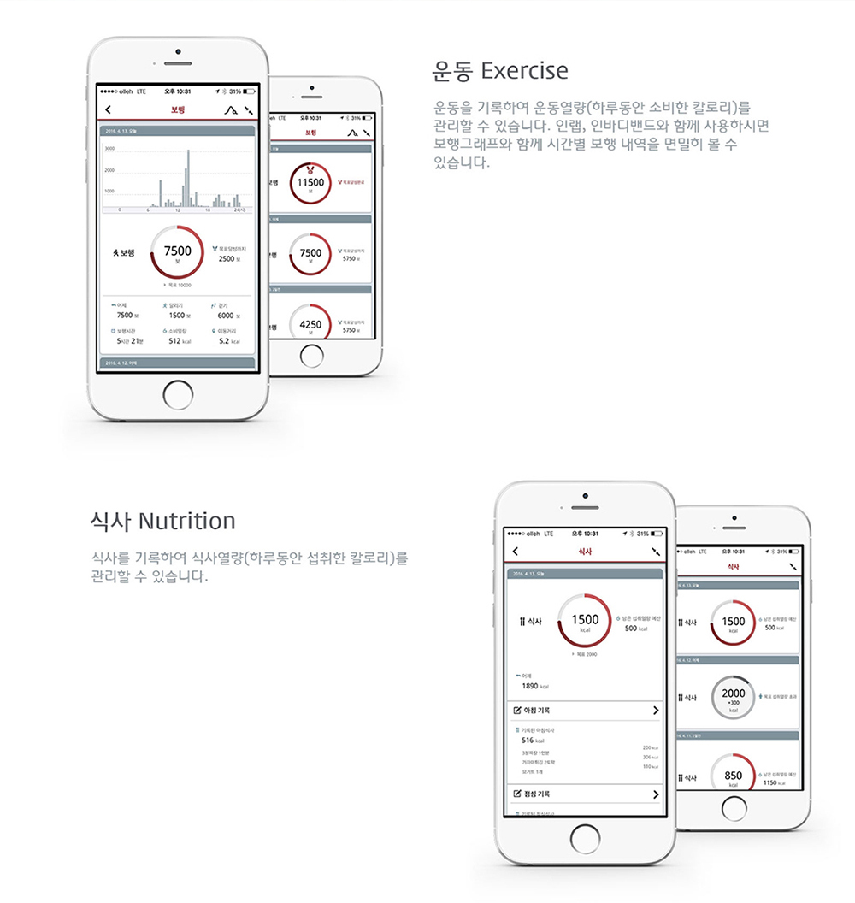